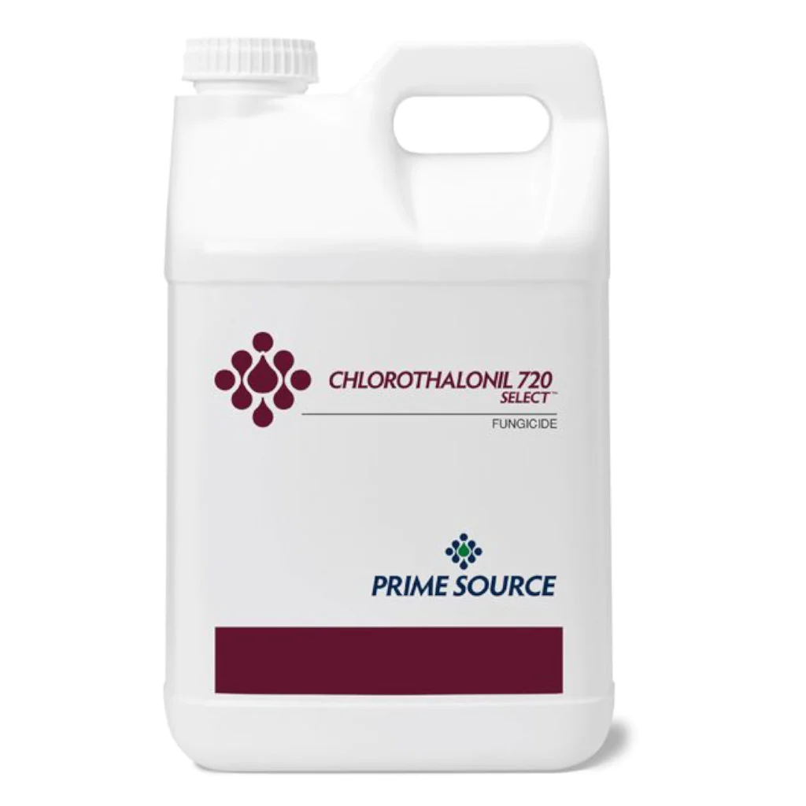
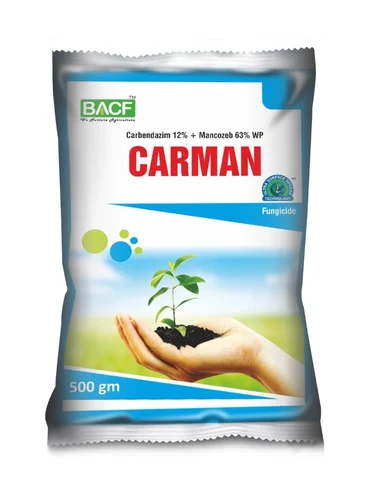

HOME
ABOUT
CONTACT
Alterneria leaf blight:

Price:
450-650 rupees/1kg,
Treat the acid-delinted seeds with Chlorothalonil at 4 g/kg of seed .
Chlorothalonil acts primarily as a fungicide and mildewicide, but also has some activity as a bactericide, microbiocide, algaecide, insecticide, and acaricide. It is a broad spectrum, non-systemic pesticide.
Apply Chlorothalonil DF at a rate of 5-8.8lbs per acre of land for fungicide prevention. ...
The product label recommends that you use 30 to 40 gallons of water per acre when applying Chlorothalonil DF.
Chlorothalonil should be applied at times when plant diseases are most likely to occur and favor disease development.Chlorothalonil:
Carbendazim:

Price
600-900 rupees/kg
Carbendazim, a systemic benzimidazole fungicide, is applied repeatedly to control plant diseases including soilborne diseases, over a growing season. Studies were carried out under laboratory conditions to assess the effects of repeated carbendazim applications on its persistence and microbial community in soil.